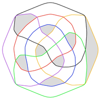
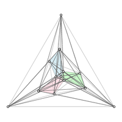
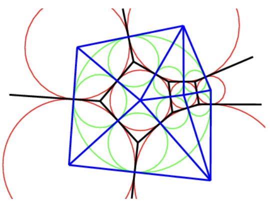

OpenYarnStash
App for managing your yarn stash and knitting/crochet projects — tracks inventory, yarn usage, and project statistics.
Software
GitHub
A SAT-based framework for exhaustive graph-theoretic search — supports graphs, digraphs, planar graphs, matroids, and other combinatorial structures by exploiting symmetries to prune the search space.
A SAT-based framework for investigating topological drawings via rotation systems — enables automated search and verification of combinatorial properties of graph drawings.

Tools and an extensive data collection for arrangements of pseudocircles, covering enumeration, realizability, and structural properties.
Algorithms and theory for representing graphs as contact graphs of convex polygons; includes a full computational study of k-gon contact representations.

A curated collection of point sets with rare combinatorial properties — both interesting individual configurations and well-known families from the literature (e.g. Horton sets) — serving as a reference resource for researchers in combinatorial and computational geometry.
Kotlin Multiplatform remote attestation library for Android and iOS — verifies device integrity via platform attestation certificates. Contributed to ASN.1 parsing for certificate-based attestation.
Kotlin Multiplatform Crypto/PKI library supporting signing, verification, and key management across JVM, Android, and iOS. Contributed to ECC math internals.

Implementation of primal-dual circle representations of planar graphs.
App for managing your yarn stash and knitting/crochet projects — tracks inventory, yarn usage, and project statistics.
General-purpose inventory management system — tracks articles across storage locations with expiration dates and usage statistics.
Grid-based live sequencer supporting multiple loops with individual patterns and mixed time signatures.